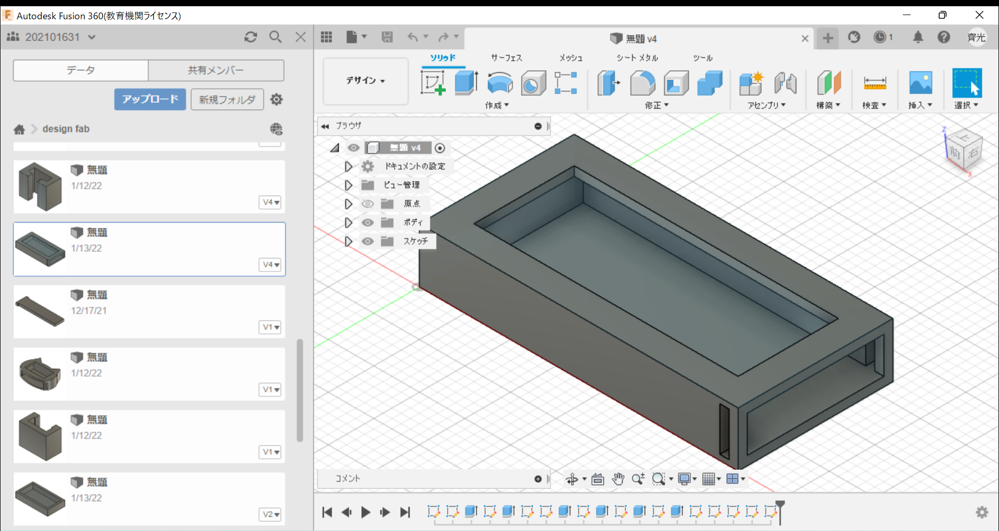
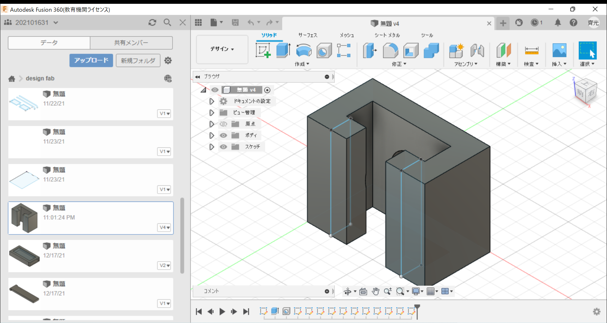
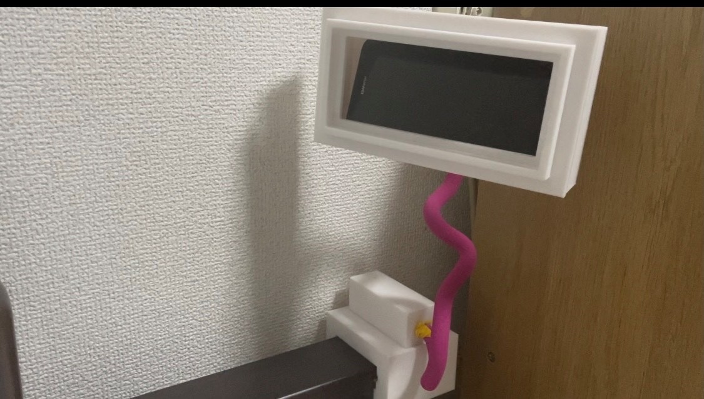

最終課題
テーマ
- 今回最終プロジェクトとして私が考えたテーマは、日常生活を豊かにする物です。
- 近年技術の発展により私達の生活が楽になり、QOLが上がっていきました。
- しかし、自分で一人暮しをしていく中で、このような商品があったらもっと生活が楽になるのではないかと考え今回の作品を作製しました。
作製するまでの過程
- 今回作製した作品は寝ながらスマートフォンを持たずに動画などを見ることが出来る物です。
- 普段生活していく中で、スマートフォンを使用する場所は、私は家の中のベッドの上でスマートフォンを使用する時間が長いと感じました。
- しかし、その中でベッドで寝そべりながらスマートフォンを使用していると、顔にスマートフォンを落としてしまったりしてしもうことがある。
- そこで、寝そべりながら手を使わずにスマートフォンを見ることが出来る物を作製しました。
作製した物
・スマートフォンを入れる箱

・土台部分

・実際の作品の写真

作品説明
- この作品はベッドに土台部分をつけ、スマートフォンを固定する物です。
- 土台部分とスマホを入れる部分は針金でつながっているため、360度回転することが出来ます。
- 動画をスマホで撮影したため、昔使っていた壊れたスマホを入れているため動画内のスマホに映像は映ってはいません。
- また、普段使用しているスマホに大きさを合わせたので、動画内のスマホは固定されていないように見えます。
作品動画
作品動画
作品動画(op有り)
縦で動画を撮影したためYouTubeShortになってしまいました。
デジタルファブリケーショントップページ
XBPトップページ